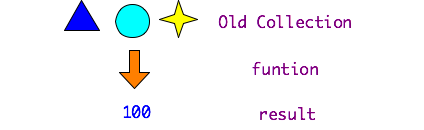

Les fondements, innovants ou antédiluviens, qui font de
Clojure
un outil unique sur la JVM !
Les grandes idées et les petites attentions du langage.
Clojure
un outil unique sur la JVM !
Les grandes idées et les petites attentions du langage.
(println "Bonjour et bienvenus BreizhCampeurs !")
#1 Le logiciel libre / Debian
#2 Java / JVM / optimisation
#3 FP / Clojure / (Haskell)
 @CedricPineau
@CedricPineau
#2 Java / JVM / optimisation
#3 FP / Clojure / (Haskell)
@CedricPineau
Clo-What ?
KISS-ako ?

"Reducing incidental complexity is a primary focus of Clojure"
Clo-jure
Un développement ouvert, sous licence Eclipse Public License70 développeurs sur la release 1.4
Une grosse communauté
- Plusieurs conférences dédiées :
- Clojure/West (San Jose)
- Clojure/Conj (Raleigh)
- Euroclojure (Londres)
- (Sans parler du BreizhCamp 2013 !)
http://dev.clojure.org/display/community/Clojure+Success+Stories
Classement TIOBE
Dans les limbes ..
.. entre les positions ..
.. 51 et 100 !
(Avec F#, Go, Groovy, .. ;-))
ThoughtWorks Technology Radar
(mars 2012)
(mars 2012)

Un LISP
"Practical LISP on the JVM"
- Une syntaxe à base S-expression, une notation préfixée
- Un REPL
- typage dynamique (mais fort)
- fonctionnel impur
Lots of Irritating Superfluous Parenthesis !
(mais moins que LISP !)
- LISP aka LISt Processing.
Le couple de parenthèses définit une liste.
- mais éléments de syntaxe tel que les vecteurs [], les maps {}
- au final pas davantage de tokens de structuration que les autres langages
Pourquoi une notation préfixée ?
- Une syntaxe régulière, les opérateurs sont des fonctions
- Un nombre d'arguments variables : (+ 1 2 3)
- Pas de casse-tête de priorité d'opérateurs !
(+ (* 2 3) 1) ; 1 + 2 * 3
;=> 7
A l'inverse de nombreux langages, il n'existe pas de "Statement"
Tout est expression dont l'évaluation donne une valeur unique, même les constructions de type if, for, ..
1
;= 1
[1 2 3] ; Vecteur
;= [1 2 3]
(println "Bonjour et bienvenus BreizhCampeurs !")
; Bonjour et bienvenus BreizhCampeurs !
;= nil
(+ 1 2) ; Appel de fonction
;= 3
Cette structure régulière facilite l'apprentissage du langage
(def a 1) ; int a = 1;
;= #'user/a
(inc a) ; a++; ou ++a; ou a+=1; ou a+1;
;= 2
(if (odd? a) (/ a 2) a) ; a%2 != 0 ? a / 2 : a;
;= 1/2
(defn square [x]
"Met au carré"
(* x x))
;= #'user/square
Homoiconicité
"Lisp programs are lisp data structures"
- Chaque S-expression est un literal ou une liste
- Facilite la création de mini-langages adaptés aux besoins, les Domain Specific Languages
- Une grand partie du langage est défini à partir de macros !
Exemple de la construction "with-open"
(with-open [r (java.io.FileReader. "myfile.txt")]
(loop [c (.read r)]
(if (not= c -1)
(do
(print (char c))
(recur (.read r))))))
(defmacro with-open
[bindings & body]
(assert-args
(vector? bindings) "binding vector"
(even? (count bindings)) "even forms")
(cond
(= (count bindings) 0)
`(do ~@body)
(symbol? (bindings 0))
`(let ~(subvec bindings 0 2)
(try
(with-open ~(subvec bindings 2) ~@body)
(finally
(. ~(bindings 0) close))))
:else (throw (IllegalArgumentException.
"only allows Symbols in bindings"))))
DSL : Enlive (HTML templating)
(defn home-page []
(html
[:head
(include-css "/static/site.css")
[:title *title*]]
[:body
[:a {:href "http://clj-la.org"}
[:img {:id "logo" :src "logo.png"}]]
[:div {:class "header"} "Hi " (user-name)]
[:h1 *title*]
"URL: " [:input {:type "text" :id "url"}]
[:button {:id "shorten"} "Shorten"]
[:div {:id "short" :class "short"}]]
(include-js "/static/site.js")))
DSL : ClojureQL (SQL)
(with-results [rs (table :customer)]
(doseq [r rs] (println (:lastname r)))
(conj! (table :customer) {:firstname "Rich"})
(conj! (table :customer)
[{:firstname "Rich" :lastname "Hickey"}
{:firstname "Stuart" :lastname "Halloway"}])
"Practical LISP on the JVM"
"Lisp is a programmable programming language."
John Foderaro, CACM, September 1991
"Lisp isn't a language, it's a building material."
Alan Kay
La Read–Eval–Print Loop
Un outil de développement interactif
Un outil de développement interactif
user=> ??
La modularité clojure repose sur l'utilisation d'espaces de nommage
(ns ^{:doc "The core Clojure language."
:author "Rich Hickey"}
clojure.core)
; <->
(defn require
; <->
(defn use
; <->
On utilise require et use pour lier ou importer d'autres namespaces.
clojure.core et java.lang sont importés par défaut
(def input (java.io.StringReader.
"
bar "))
(require 'clojure.data.xml)
(clojure.data.xml/parse input)
;= #clojure.data.xml.Element{:tag :foo,
;= :attrs {},
;= :content ("bar")}
(require '[clojure.data.xml :as xml])
(xml/parse input)
(use 'clojure.data.xml)
(parse input)
Quelques fonctions utiles dans un REPL
(doc doc)
; -------------------------
; clojure.repl/doc
; ([name])
; Macro
; Prints documentation for a var or special form
; given its name
;= nil
Quelques fonctions utiles dans un REPL
all-ns ; sequence de tous les namespaces
ns-publics ; contenu public d'un namespace
apropos ; recherche par regexp dans les noms
find-doc ; recherche par regexp dans les docs
source ; affiche les sources d'une fonction/macro
pst ; affiche la stacktrace, *e pour la dernière
javadoc ; charge la doc java demandée
Un typage dynamique à la LISP mais fort à la Java
- Pas de conversion de type implicite à la Javascript/PHP
- Des erreurs de types à l'exécution !
(+ 1 "2")
; ClassCastException java.lang.String
; cannot be cast to java.lang.Number
; clojure.lang.Numbers.add (Numbers.java:126)
Quels types ?
\A ; caractères, dont \o41 \u00ff \space, etc
;= \A
"Bonjour BreizhCampeurs !" ; chaînes
;= "Bonjour BreizhCampeurs !"
true ; booléens
; = true
(+ 1 1/7) ; long, double, bigint/decimal + ratio
;= 8/7
:pizza4all ; Keyword
;= :pizza4all
(re-find #"\d+" "a123de") ; regexp
;= "123"
nil ; équivalent du null java, vaut false
;= nil
et un ensemble de structures de données :
; Le vecteur, indexé
(get [1 2 3 4] 2)
;= 3
; Map
({:name "Clojure", :auteur "Rich Hickey"} :name)
;= "Clojure"
; Set
(#{ \e \i \o \u} )
;=
; Une liste (chainée simple)
(second '( \e \i \o \u))
;= \e
manipulées au travers de 7 abstractions :
- Collection
- Sequence
- Associative
- Indexed
- Stack
- Set
- Sorted
Collection
Toutes les structures de données clojure sont des collections
(def c (conj [] 1 2 3))
;= #'user/c
c
;= [1 2 3]
(count c)
;= 3
(conj '(1 2) 3)
;= (3 1 2)
(conj [1 2] 3)
;= [1 2 3]
Sequence, une abstraction essentielle du langage
Toutes les Collections clojure et Java, les maps Java, les CharSequence (dont String), les Iterable, les Arrays et même nil sont des séquences.
Concrètement un répertoire et un fichier sont des séquences, les enregistrements d'une table de BD forment une séquence
L'intérêt principal des sequences est l'évaluation paresseuse, et les séquences infinies
(cons 3 '(1 2)) ou (cons 3 [1 2])
;= (3 1 2)
; first, second, rest, last, butlast, ..
(defn random-ints [limit]
(lazy-seq
(cons (rand-int limit)
(random-ints limit))))
;= #'user/random-ints
(take 10 (random-ints 50))
;= (49 5 2 30 35 27 16 17 6 16)
http://clojure.org/Sequences
Associative
(def m (assoc {} :fname "Rich" :lname "Hickey"))
;= #'user/m
(get m :lname) ; ou (m :lname) ou même (:lname m)
;= "Hickey"
(get m :age "inconnu")
;= "inconnu"
(dissoc m :fname :age)
;= {:lname "Hickey"}
(contains? m :fname)
;= true ; !?!
(assoc [1 2 3 4] 2 15)
; [1 2 15 4]
; keys, vals, ..
Indexed
(def v [:a :b :c])
;= #'user/v
(nth v 2) ; ou (v 2) car v est "Associative" !
;= :c
(nth v 3)
;= IndexOutOfBoundsException ..
(nth v 3 0) ; possibilité de valeur par défaut
;= 0
(get v 3)
;= nil
(get :?? 3)
;= nil
Stack
(def s (conj '() 1 2 3))
;= #'user/s
s
;= (3 2 1)
(peek s)
;= 3
(pop s)
;= (2 1)
Set
(def s #{1 2 3})
;= #'user/s
s
;= #{1 2 3}
(disj s 3 1)
;= #{2}
clojure.set : union, intersection, projection, etc
Sorted
(def sm (sorted-map
:lname "Hickey" :fname "Rich" :age :??))
;= #'user/sm
sm
;= {:age :??, :fname "Rich", :lname "Hickey"}
(rseq sm)
; ([:lname "Hickey"] [:fname "Rich"] [:age :??])
(subseq sm > :b < :l)
;= ([:fname "Rich"])
Clojure encourage la programmation fonctionnelle
Par définition, une fonction "pure"
- a une valeur de retour qui ne dépend que des arguments passés
- n'a pas d'effet de bord (modification du monde)
- n'a pas de notion de temps
En clojure
- Les fonctions sont des objets de première classe
- La bibliothèque clojure est truffée de fonctions d'ordre supérieur
Map
(map #(+ 10 %1) [ 1 3 5 7 ])
;= (11 13 15 17)
(http://techbehindtech.com/)
Reduce

(reduce * [2 3 4])
;= 24
Filter
(filter even? [1 2 3 4 5 6])
;= (2 4 6)
Iterate
"Returns a lazy sequence of x, (f x), (f (f x)) etc.
f must be free of side-effects"
(take 10 (iterate (partial + 2) 0))
(0 2 4 6 8 10 12 14 16 18)
// http://commons.apache.org/lang/StringUtils
public static int indexOfAny(String str,
char[] chars) {
if (isEmpty(str)
|| ArrayUtils.isEmpty(chars)) {
return -1;
}
for (int i = 0; i < str.length(); i++) {
char ch = str.charAt(i);
for (int j = 0; j < chars.length; j++) {
if (chars[j] == ch) {
return i;
}
}
}
return -1;
}
(defn indexed [coll]
(map vector (iterate inc 0) coll))
(defn index-filter [pred coll]
(for [[idx elt] (indexed coll)
:when (pred elt)] idx)))
; clojure.core/for
; ([seq-exprs body-expr])
; Macro
; List comprehension. Takes a vector of one or
; more binding-form/collection-expr pairs, each
; followed by zero or more modifiers, and yields
; a lazy sequence of evaluations of expr.
;Un autre petit exemple au passage :
(take 9 (for [x (range)
:when (> (* x x) 3)] (* 2 x)))
;= (4 6 8 10 12 14 16 18 20)
(Stuart Halloway)
(index-filter #{ \e \i \o \u} "Br zhC mp urs")
;= (11)
(index-filter #{ \e \i \o \u} "BreizhCampeurs")
;= (2 3 7 10 11)
(index-filter #{2 3 5 7} (range 6))
;= (2 3 5)
(index-filter #(> (.length %) 3)
["Bonjour" "les" "BreizhCampeurs" "!"])
;= (0 2)
=> la prog fonctionnelle construire la généralisation : lazy-sequence de toutes les correspondances pour un prédicat sur une séquence
(~20 méthodes de StringUtils : countMatches, indexOf, indexOfAny, indexOfAnyBut, indexOfIgnoreCase + les mêmes pour last, + nth, etc..)
Lisibilité
effort total = effort par line x nombre de lignes
Le code clojure est plus dense que le code Java (d'un facteur 10)
marginalement par la syntaxe
ou les petites attentions (with-open..)
principalement par la
généricité des structures de données et des traitements
ou les petites attentions (with-open..)
principalement par la
généricité des structures de données et des traitements
"The Kingdom of Nouns"
Entre applications, nous utilisons de la donnée pure. Pourquoi ne le faisons nous pas à l'intérieur de nos programmes ?Un objet
- réinvente la roue again, and again, and again, and..
- a des méthodes information-specific
- lie la logique externe à cette implémentation au lieu d'utiliser des traitements génériques
- empeche du coup la composition
Clojure est donc fonctionnel...
mais impur !
Il ne force pas à la transparence référencielle, à l'absence d'effets de bord
Cependant :
"Most parts of most programs should be functional"
"Programs that are more functional are more robust"
- par l'évaluation paresseuse
- par la parallélisation
- par les méchanismes de synchro
- car elle facilite la lecture, le test, la maintenance !
Sur la JVM
Construit avec et sur l'écosystème
- construit avec et sur l'écosystème
- compilé en bytecode (jamais interpreté), à la volée ou "Ahead Of Time"
- parfaitement intégré au langage Java
- toutes les librairies sont accessibles
- les outils de développement, de profilage, de monitoring,
- Les outils et frameworks Clojure ne sont souvent que des surcouches
On ne réécrit pas les drivers JDBC ou les serveurs Web !
Interopérable avec Java
(Widget. "red") ; instantiation
(.nextInt rnd) ; appel de méthode
(println Math/PI) ; variable statique
(javax.swing.JOptionPane/showMessageDialog
nil "Bonjour BreizhCampeurs !")
; méthode statique
Et pour aller (un peu) plus loin
(.. person getAdress getZipCode)
; accès chainé : moins de () qu'en java !
(def salueur
(reify Runnable
(run [this]
(println "Bonjour BreizhCampeurs !"))))
;= #'user/salueur
(.run salueur)
; Bonjour BreizhCampeurs !
;= nil
- Les map, set, list et vector, respectent les interfaces Map, Set, List et Vector Java :-)
- Les fonctions implementent Runnable et Callable
(import '(javax.swing JFrame JPanel JButton
JOptionPane) 'java.awt.event.ActionListener)
(def button (JButton. "Click Me!"))
(def panel (doto (JPanel.)
(.add button)))
(def frame (doto (JFrame. "Hello Frame")
(.setSize 200 200)
(.setContentPane panel)
(.setVisible true)))
(defn say-hello []
(JOptionPane/showMessageDialog nil
"Hello BreizhCampeurs !" "Greeting"
JOptionPane/INFORMATION_MESSAGE))
(.addActionListener button (reify ActionListener
(actionPerformed [this event] (say-hello))))
Interopérabilité : Clojure depuis java
(ns calculateur)
(defn calcule [args]
(apply + args))
RT.loadResourceScript("calculateur.clj");
Object resultat = RT
.var("calculateur", "calcule")
.invoke(new int[] {1, 2, 3});
System.out.println(resultat);
Axé sur la Concurrence
Le problème
Peu de programmes sont "fonctionnels", ce sont des process :- des effets de bord
- des états (mémoire ou base de données)
- => notion de "temps" et différentes réponses à différents "moments".
La gestion des états en mémoire est un casse-tête dans un contexte muti-thread.
Clojure aborde cette question sous un angle "nouveau"
Clojure aborde cette question sous un angle "nouveau"
Autrefois..
Le modèle traditionnel de la variable était adapté dans un contexte mono-thread où le "temps" était représenté par le flux d'exécution du code.
Avec plusieurs threads, il n'y a plus de sequence d'exécution, plus de maitrise de l'emplacement d'une instruction dans le temps en regard des états que va prendre une variable.
=> synchronisation manuelle, locks, AtomicLong => difficile, fragile
Tada !!
L'approche concurrentielle de Clojure est caractérisée par le concept d'identité, qui représente une série d'états immuables dans le temps.Les états sont consultables en parallèle.
Gérer la concurrence,
gérer le temps,
c'est gérer le passage d'un état à un autre.
Gérer la concurrence,
gérer le temps,
c'est gérer le passage d'un état à un autre.
Trois concepts
#1 L'identité
Une série d'états liés dans le temps.
- Pas un nom ! Une identité porte plusieurs noms.
J'appelle ma mère maman, vous l'appelez madame Pineau ! - Pas stable ! Une succession d'état
Monnaie en france : le franc, puis l'euro, bientôt le franc ? - Peut-être composée. L'identité gouvernement a pris une nouvelle valeur du fait des élections !
Trois concepts
#2 La Valeur
Une valeur est par définition quelque chose d'immuable :
- 42
- Une date
- Un ensemble de données
Trois concepts
#3 L'état
L'état, c'est la valeur d'une identité à un instant donné
=> ce qui gère le temps doit manipuler des valeurs
Immutabilité
"Things don't change in place."
Le futur est fonction du passé mais ne le change pas.
=> Tous les types clojure vus jusqu'ici sont immuables !
De manière efficace dans l'espace
De manière efficace dans le temps
(repose sur le partage de sous-structures, possible puisque immuables !)
De manière efficace dans l'espace
De manière efficace dans le temps
(repose sur le partage de sous-structures, possible puisque immuables !)
Illustration : La marche athlétique
"Un pied au moins doit être en permanence en contact avec le sol tandis que la jambe de soutien doit être droite depuis le moment où le pied touche le sol jusqu'à ce qu'elle passe au-dessous du corps"
En java
Reférence directe sur les jambes du marcheur
=> lock (stop the world !) pour avoir les positions des deux simultanément.

En clojure
Reférence indirecte
Prise d'un snapshot (un état) par déréférencement.
L'état est une value, immutable.
Je suis hors du temps pour détecter la faute

Concrètement
Clojure propose 4 types de références mutables
Chacun avec sa sémantique pour la transition inter-état :
- refs : partagé/synchrone/coordonné
- agents : partagé/asynchrone/autonome
- atoms : partagé/synchrone/autonome
- vars : les modifications ne sont visibles que du même thread
Concrètement
Un modèle uniforme de changement d'état :
('change-state' ref function [args*])
- recoit l'état courant (en + des args) et retourne l'état suivant
- snapshot de l'état courant toujours disponible via deref
- pas de locks
Refs
- Utilise un Software Transactional Memory (ACI) !
- via une transaction : (dosync ..)
- spéculative (rejoue la fonction si conflit)
(def foo (ref {:me "jane", :you "?"}))
;= #'user/foo
@foo
;= {:me "jane", :you "?"}
(assoc @foo :you "tar-zan")
;= {:me "jane", :you "tar-zan"}
@foo
;= {:me "jane", :you "?"}
(commute foo assoc :you "tar-zan")
;= IllegalStateException No transaction running
(dosync (commute foo assoc :you "tar-zan"))
;= {:me "jane", :you "tar-zan"}
@foo
;= {:me "jane", :you "tar-zan"}
Agents
Les actions envoyés sont mis en queue
(def foo (agent {:me "jane", :you "?"}))
;= #'user/foo
(send foo assoc :you "tar-zan")
;= #<Agent@20d9896e>
@foo
;= {:me "jane", :you "?"}
; ... plus tard ...
@foo
;= {:me "jane", :you "tar-zan"}
Atoms
Garantie d'atomicité sur les modifications
(def foo (atom {:me "jane", :you "?"}))
;= #'user/foo
(swap! foo assoc :you "tar-zan")
;= {:me "jane", :you "tar-zan"}
Ici aussi une mise à jour spéculative, la fonction peut-être appelée plusieurs fois.
Vars
Définissent les entrées des espaces de nommages : la correspondance entre un nom et une instance d'un des types vus : fonction, int, atom, etc
(def foo {:me "jane", :you "?"})
;= #'user/foo
Une redéfinition est visible de l'ensemble des threads
Vars
Elles offrent cependant un méchanisme utile en multi-thread : le binding par thread (et en pile) :
(def ^:dynamic *foo* {:me "jane", :you "?"})
;= #'user/*foo*
(binding [*foo* {:me "jane", :you "tar-zan"}]
(doto (Thread. #(println "not bound :" *foo*))
.start .join)
*foo*)
; not bound : {:me jane, :you ?}
;= {:me "jane", :you "tar-zan"}
foo
;= {:me "jane", :you "?"}
En Résumé
Des valeurs immutables- une notion typiquement fonctionnelle
- qui s'avère précieuse dans la gestion de la concurrence
Un assortiment de méchanismes de synchronisation d'écriture
Un accès en lecture qui n'est jamais bloqué
Last but not least :
"No user locking, no deadlock !"
"No user locking, no deadlock !"
Parallelisme
On a vu (furtivement) pmap mais il existe d'autres mécanismes abstrayant la distribution de calculs sur plusieurs threads :
(pmap + [1 1] [2 2])
;= (3 3)
(pvalues (+ 1 2) (+ 1 2))
;= (3 3)
(pcalls #(+ 1 2) #(+ 1 2))
;= (3 3)
(def d (delay (println "Running...") :done!))
;= #'user/d ;
(@d) ; réalisé à la consommation
; Running...
;= :done!
(def f (future
(Thread/sleep 5000) :done! 1000 :troplong!))
;= #'user/f
f ; s'exécute dès son création
;= #<core$future@1b0c6cfc: :pending>
f
;= #<core$future@1b0c6cfc: :troplong!>
@f
;= :troplong!
Et l'expréssivité
#1 : "Expression Problem"
Comment faciliter l'évolution des programmes
par l'ajout de traitement ou de type de données ?
En langage fonctionnel, il est facile d'ajouter de nouveaux traitements (fonctions) mais difficile d'ajouter de nouveaux types de données
(modification des if/cond/bloc de match qui déterminent le code du traitement à utiliser pour chaque type)
En langage OO, il est facile d'ajouter de nouveaux types mais difficile d'ajouter des traitements
Le pattern Visiteur n'est qu'une demi réponse qui nous ramène dans un mode fonctionnel : l'ajout de type nécessite de retoucher les visiteurs
Les abstractions de constructions
Les protocols et les datatypes ont été introduits avec Clojure 1.2 de manière à ce que le langage dispose de ses propres abstractions pour définir ses librairies
Avant cela les Sequence, Collection, etc étaient définis en terme d'interface Java et leurs implémentations sous la forme de classe, ce qui rendait le langage dépendant de la plateforme sous-jacente
Les abstractions de constructions
- Le protocole, une sorte d'interface Java
(defprotocol MonProtocol
"La doc de mon protocole"
(bar [a b] "bar docs")
(baz [a] [a b] [a b c] "baz docs"))
(defrecord Point [x y]) ; Le POJO clojure..
Le support d'un protocole par un type est indépendant de sa déclaration et des autres types supportés par le protocole :
(extend-type Point ; extend/extend-protocol
MonProtocol
(bar [a b] a)
(baz ([x] x) ([x y & zs] x)))
(bar (Point. 1 2) :n'imp)
;= #user.Point{:x 1, :y 2}
=> Clojure permet de déclarer des ensembles nommés de comportements d'un côté, des types de données de l'autre et de cabler le tout de manière orthogonale :
- Sans avoir, sans modifier le code du Protocole
- Sans avoir, sans modifier le code du Record
Les types de données offre par ailleurs un certain nombre de caractéristiques remarquables :
- ils sont "Associative"
- ils supportent des méta-données (comme tout le reste..)
- ils offrent un certain nombre de constructeurs
- ils sont Reader-ready :
- ils sont "Associative"
(:x (Point. 2 3))
;= 2
(assoc (Point. 3 4) :z 5)
;= #user.Point{:x 3, :y 4, :z 5}
- ils sont immutables (more to come..)- ils supportent des méta-données (comme tout le reste..)
- ils offrent un certain nombre de constructeurs
- ils sont Reader-ready :
user=> (pr-str (Point. 2 3))
;= #user.Point{:x 2, :y 3}"
user=> (= (read-string *1) (Point. 2 3))
;= true
#2 Polymorphisme
"Utiliser le même code avec différents types" (Wikipedia)
On connait en Java, trois formes de polymorphismes intégrés au langage :
- surcharge d'une méthode (types différents des paramètres)
- redéfinition de comportements dans une hierarchie de classes
- classes paramétrées, réalisées pour différents types
=> l'appel des méthodes est homogène et le routage de l'appel se base sur le type de l'objet sous-jacent.
Clojure généralise le principe..
.. en explicitant la fonction de répartition
Multi-méthode = f° de répartition + n [valeur, f° de traitement]
(defmulti calcul
(fn [v] (if (<= (count v) 1000)
:direct :parallel)))
(defmethod calcul :direct [v]
(Thread/sleep 10) (reduce + v)) ; long !
(defmethod calcul :parallel [v]
(calcul (pmap calcul (partition 1000 v))))
.. en permettant la création de hierarchies adhoc
(def h (atom (-> (make-hierarchy)
(derive java.util.Map ::collection)
(derive java.util.Collection ::collection))))
(defmulti foo class
:default :a-what?
:hierarchy h)
(defmethod foo ::collection [c] :a-collection)
(defmethod foo Integer [i] :an-integer)
(defmethod foo String [s] :a-string)
.. en permettant des dispatchs composites
(defmulti service-charge
(fn [acct] [(:account-level acct) (:tag acct)]))
(defmethod service-charge
[:acc/Basic :acc/Checking] [_] 25)
(defmethod service-charge
[:acc/Basic :acc/Savings] [_] 10)
(defmethod service-charge
[:acc/Premium :acc/Account] [_] 0)
All together !
defrecord + defmulti
(defrecord Rectangle [longueur largeur])
(defrecord Cercle [rayon])
(defmulti surface type)
(defmethod surface Rectangle [r]
(* (:longueur r) (:largeur r)))
(defmethod surface Cercle [c]
(* (. Math PI) (* (:rayon c) (:rayon c))))
(defmethod surface :default [x] :oops!)
(surface (Rectangle. 4 13))
;= 52
(surface (Cercle. 4))
;= 50.26548245743669
(surface nil)
:oops!
Quoi encore ?
Clojure n'est pas un langage pour la JVM !
C'est un langage "hébergé" : JVM, CLR, Javascript, Python, ...
(ThoughtWorks Technology Radar de mars 2012)
"ClojureScript illustrates just how cross-platform the core of Clojure really is: they ported the primary parts to run on JavaScript."
"One interesting option afforded by ClojureScript is the ability to send data structures à la JSON using ClojureScript as the data structure. Because Clojure is a Lisp, this means that you can also send “real” code."
Mais encore ?
Clojure n'est pas un langage dynamique !
Bon si.. mais
(defn len [x] (.length x))
(defn len2 [^String x] (.length x))
(time (reduce + (map len (repeat 1000000 "42"))))
; "Elapsed time: 3007.198 msecs"
(time (reduce + (map len2 (repeat 1000000 "42"))))
; "Elapsed time: 308.045 msecs"
et demain (GSOC2012) : Clojure with a type system, as a library.(https://github.com/frenchy64/typed-clojure)
Les outils
- Eclipse : Counterclockwise
http://http://code.google.com/p/counterclockwise - Intellij IDEA: LaClojure
http://plugins.intellij.net/plugin/?id=4050 - NetBeans : Enclojure
http://enclojure.org/ - Emacs, Vi, ..
- Lein : http://leiningen.org/
- https://clojars.org/
Références

http://clojure.org
http://clojure.org/cheatsheet
https://github.com/clojure
Rich Hickey !
http://infoq.com/presentations/Are-We-There-Yet-Rich-Hickey
http://infoq.com/presentations/Value-Identity-State-Rich-Hickey
http://infoq.com/presentations/Simple-Made-Easy
http://youtube.com/watch?v=rI8tNMsozo0 (Simplicity matters)
Why Clojure (Neal_Ford)
http://en.wikibooks.org/wiki/Clojure_Programming
http://tryclj.com (REPL en ligne avec tutoriel interactif)
http://4clojure.com (problèmes interactifs)
"Clojure solves the same problems that OO solves, but it solves them in different ways.
Instead of encapsulation, polymorphism, and inheritance, you have closures, namespaces, pure functions, immutable data, and multimethods.
Idiomatic OO gives you a bloated type system with duplicated code hidden away behind encapsulation boundaries and little hope for thread safety.
Clojure offers a radical alternative: a lean type system, a rich function library, and language-level concurrency support that is usable by mere mortals."